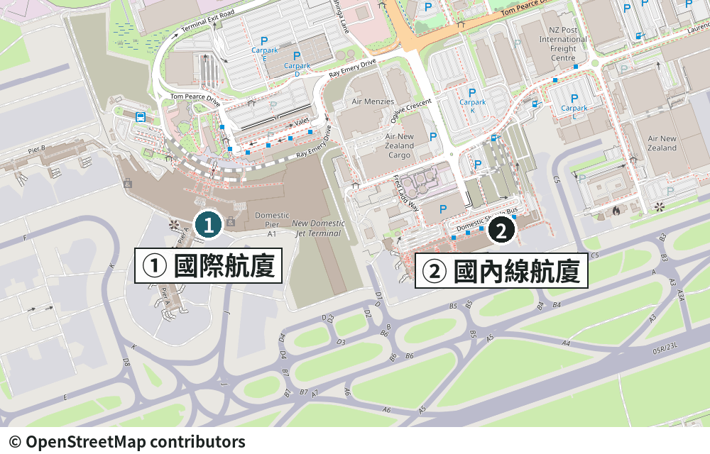
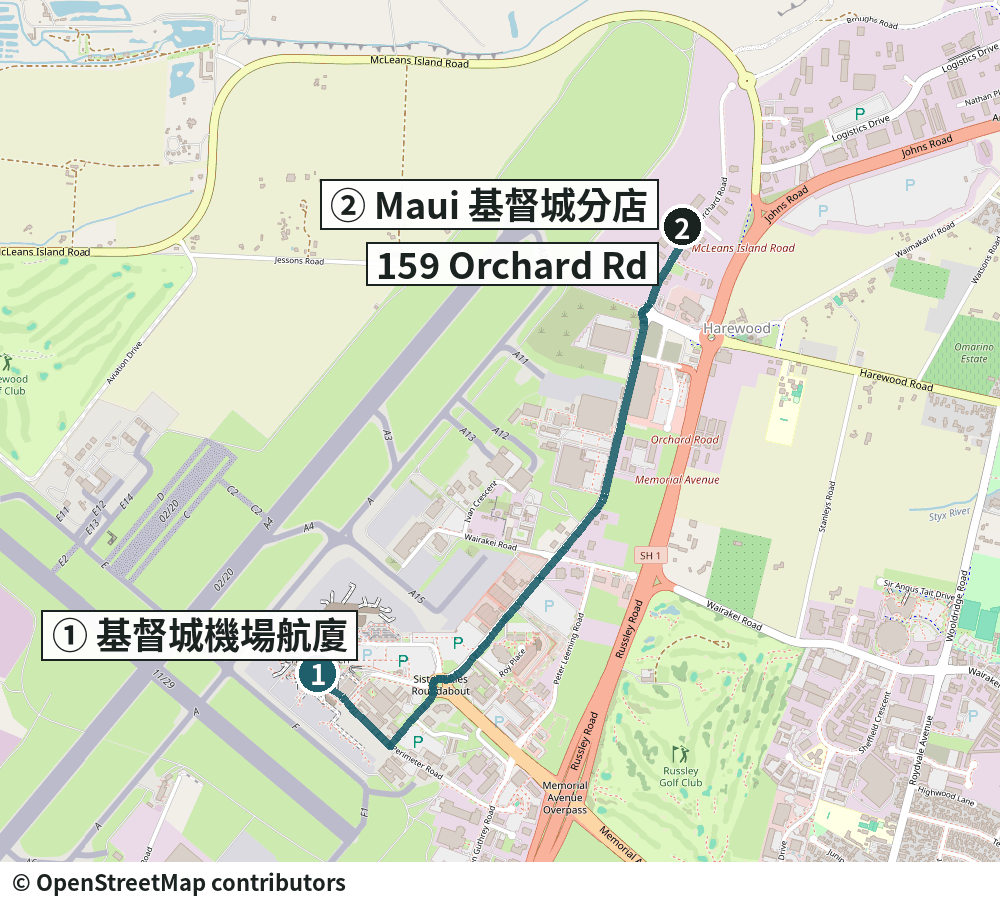

南島旅行手帳
實用資訊
航班一覽
| 日期 | 航班 | 路線 | 起飛 | 抵達 | 行李託運截止 |
|---|---|---|---|---|---|
| 11/26（四）→ 11/27（五） | NZ78 | 台北 TPE → 奧克蘭 AKL | 18:45 | 隔日 10:25 | 17:15 |
| 11/27（五） | NZ541 | 奧克蘭 AKL → 基督城 CHC | 12:45 | 14:10 | 12:15 |
| 12/8（二） | NZ584 | 基督城 CHC → 奧克蘭 AKL | 06:45 | 08:10 | 05:45 |
| 12/8（二） | NZ77 | 奧克蘭 AKL → 台北 TPE | 10:45 | 17:00 | — |
11/27 奧克蘭轉機
NZ78 10:25 抵達，NZ541 12:45 起飛，轉機時間約 2 小時 20 分。起飛前超過 60 分鐘，適用紐航國內線轉機櫃檯；紐航建議國際線轉國內線至少預留 2 小時，這個時間符合。
流程
- 入境審查（符合資格的護照可用 e-gate）。
- 到行李轉盤領行李。
- 通過海關與生物安全檢查（NZTD 申報內容見入境須知）。
- 到國際航廈一樓的紐航國內線轉機櫃檯寄行李。11:45 前到櫃檯。這個時段櫃檯位於 Zone A（09:00–19:00）。已有行李條與登機證，可到任一開放的行李託運櫃檯；尚未報到，先用自助機。
- 寄完行李後只帶隨身行李，搭接駁巴士或步行到國內線航廈。
- 國內線航廈通過安檢，前往 NZ541 登機門。
國際行李額度同樣適用於這段國內線。
兩座航廈之間
| 項目 | 資訊 |
|---|---|
| 免費接駁巴士 | 免費，約 10 分鐘車程；05:00 起，末班 22:30 |
| 國際航廈上車處 | Transport Hub 的 Bus Stop B |
| 國內線航廈上車處 | Door 2 外的 Bus Stop C |
| 步行 | 官方「綠線」步道，全長 950 m，約 10–15 分鐘，沿人行道上的綠線走 |

11/27 基督城機場取車
出發前必做
每輛露營車都要在 11/26 出發前完成 Maui 線上 check-in（填寫同行駕駛資料、觀看安全影片、閱讀租車合約），用訂位代號登入。完成後取車才能快速進行。
當天順序
- 14:10 NZ541 抵達基督城，到行李轉盤領行李。
- 到國內線區 Door 2 外，搭橘白色、印有 Maui 標誌的接駁車前往分店。
- 15:30 前抵達分店取車。
- 每位駕駛到場，出示實體駕照。交車介紹的時間比一般租車長，預留充裕。
- 取車後前往 PAK'nSAVE Papanui 採買，再到 Tasman Holiday Parks 入住。
Maui 基督城分店
| 項目 | 資訊 |
|---|---|
| 地址 | 159 Orchard Road, Christchurch Airport 8053 |
| 與機場距離 | 約 2.5 km；車程約 5 分鐘 |
| 營業時間 | 每日 08:00–16:30，12/25 公休 |
| 電話 | 紐西蘭境內免付費 0800 688 558；分店市話 +64 3 357 5624 |
| 分店停車 | 分店內沒有訪客停車位 |
| 接駁車 | 機場與分店之間雙向，約每 15 分鐘一班；人數超過座位時會加開班次。待確認：是否需事先來電通知 |
| 取車時段 | 營業時間內辦理，沒有營業時間外取車 |

12/7 還車與 12/8 返程
12/7 還車
- 15:30 前抵達分店還車（還車須在關門前 1 小時到達）。
- 還車後在分店搭接駁車回機場。
- 在機場國內線區 Door 2 外下車，步行前往 LyLo Christchurch Airport（5 Peter Leeming Road）入住。
12/8 返程
- NZ584 06:45 從基督城起飛。
- 08:10 抵達奧克蘭，NZ77 10:45 飛台北。紐航國內線轉國際線的行李可在出發機場直接掛到最終目的地；到奧克蘭後到國際航廈一樓與航空公司報到。待確認：行李是否直掛台北，在基督城託運時向櫃檯確認。
其他交通
- Uber：機場國際入境 Door 7 外的 Rideshare 上下車區。
- 計程車：國際入境 Door 7 外的計程車排班處；車資由各公司報價。待確認：計程車典型車資